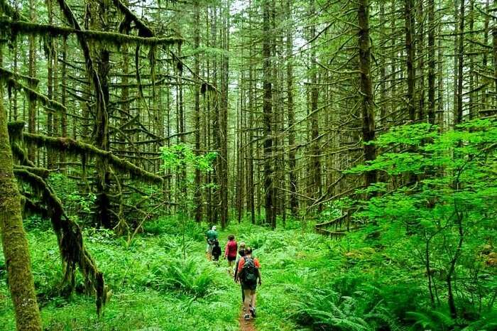
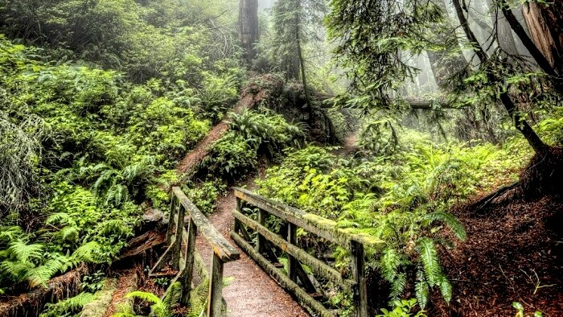
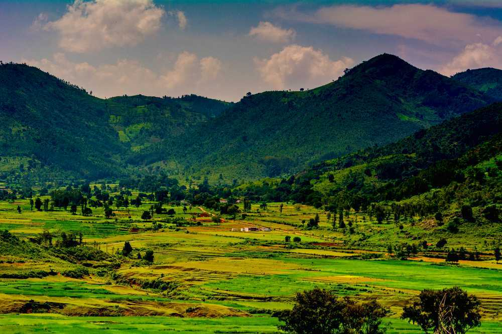

1. Andaman And Nicobar Islands – Tropical Evergreen Forest
The best example of a tropical evergreen forest in India is found in the Andaman and Nicobar Islands. What makes this place all the more
special is the large variety of flora and fauna. The Andaman Islands have rare plant and animal species that are believed to have passed
on from other nearby countries such as Myanmar, Thailand, and Bangladesh. It is believed that there over 2200 variety of plants grow in the
Andaman Islands, making it the richest biosphere in India. These tropical rainforests receive on an average a total of 2000 mm of rainfall
throughout.

2. Assam – Unspoiled Escapes
The most isolated, dense, and unspoiled rain forests in India can be found in the Assam region of Northeast India. Although the forests
are majorly in Northern Assam, traces of the same are found in Nagaland, Manipur, Mizoram, and Tripura. The rainforests in the Assam
region are characterized by low-lying hills that have a dense forest cover throughout the year and an average height of 900 meters.
This is the most popular rainforest in India. Overall, Northeast India is famous for its moist sal monsoon forests that can be found
in the Assam region as well. The region is home to many species of wild monkeys like Rhesus Macaque, Assamese Macaque, Slow Loris
capped Langurs, Pig-tailed Macaque, Stam-tailed Macaque and Hoolock Gibbons. This rainforest in Assam also has a significant
population of wild elephants.

3. Mawphlang Forest, Meghalaya
The Mawphlang Sacred Forest in the state of Meghalaya is said to be protected by a deity named Labasa. Locals say that if an object belonging
to the forest, even a leaf or a tiny pebble, is removed, Labasa tends to get upset. It is believed that once, soldiers from the Indian Army
took a log from the forest. But when they loaded their truck, the vehicle just wouldn’t start, so they had to put the log back in the forest.
Mawphlang Sacred Forest is, therefore, enchanting not just for its beauty but also for its supernatural quality.

4. Araku Valley, Andhra Pradesh
The biodiversity-rich Anantagiri and Sunkarimetta Reserved Forest are both located in Araku Valley in Andhra Pradesh. You’ll come across more
than a few waterfalls during a short trek through this forest area, where you can also visit the ancient Borra Caves, which have inspired
many legends. A number of tribes reside in the valley and there’s a tribal museum dedicated to the natives. Since coffee plantation is
rampant in the area, there’s also a coffee museum that you can visit here.